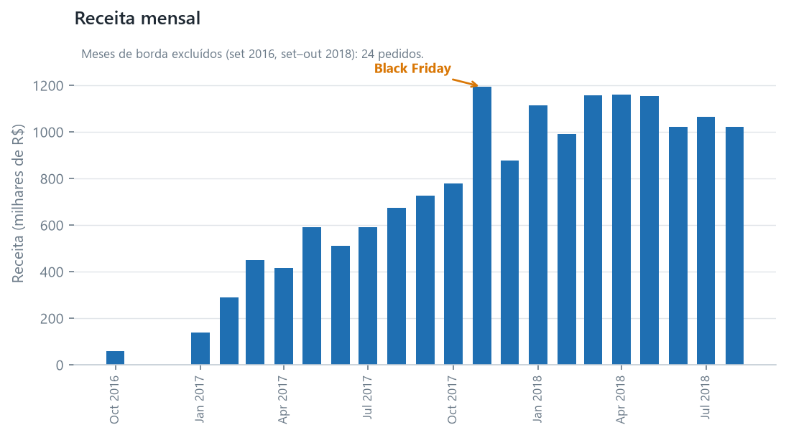
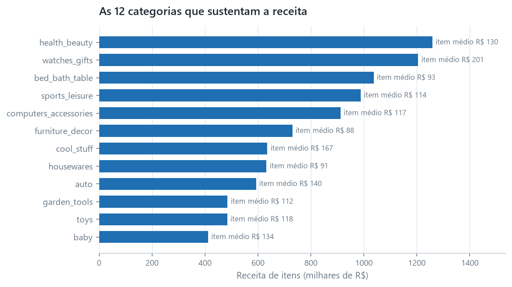
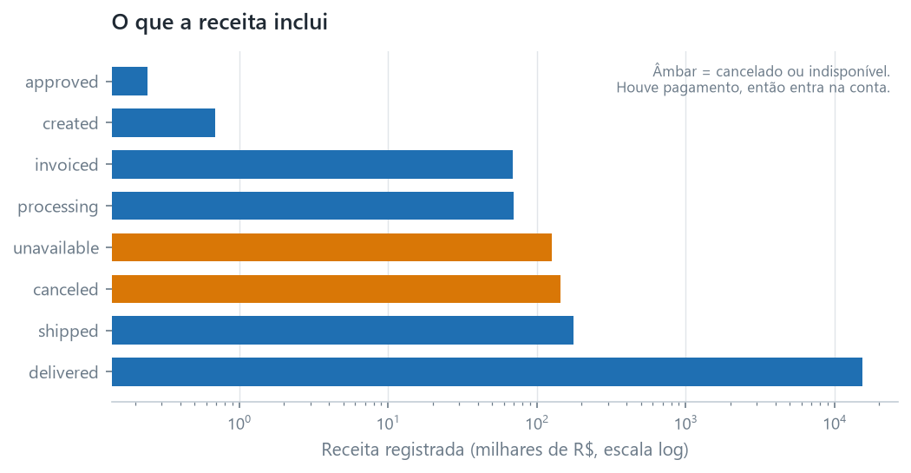
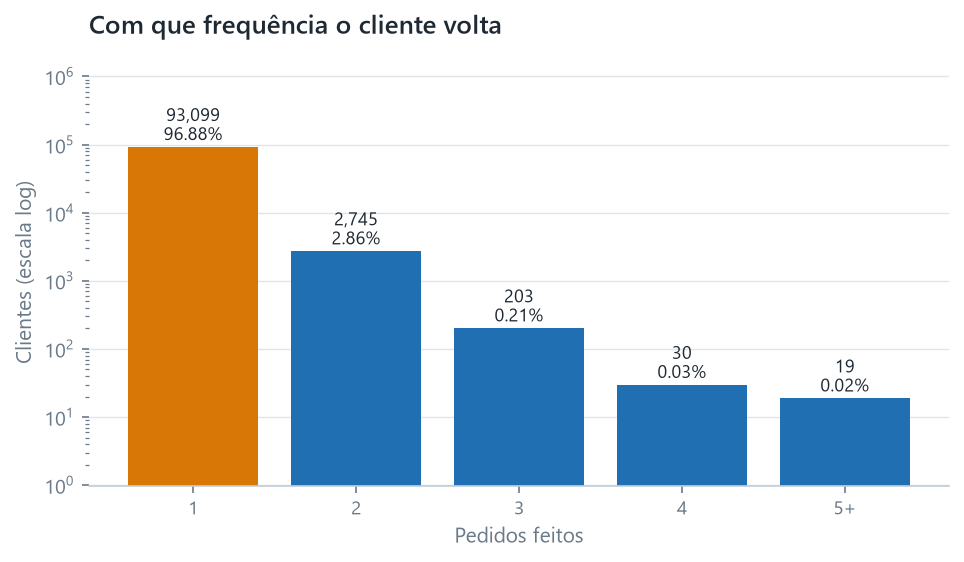
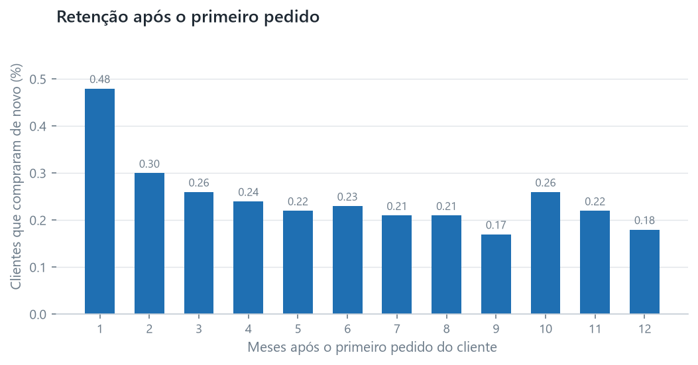
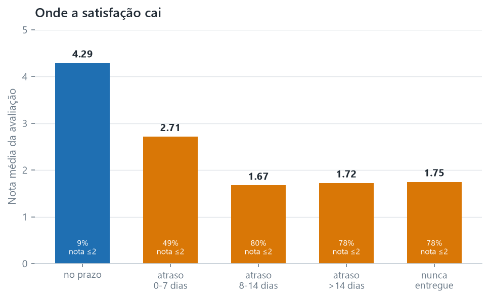
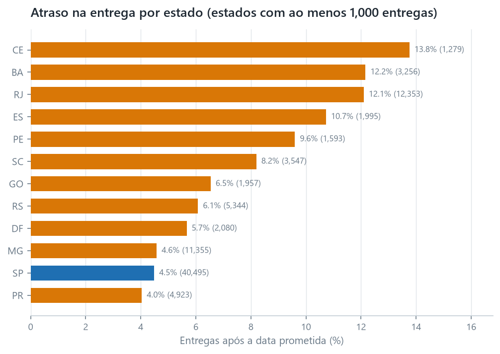
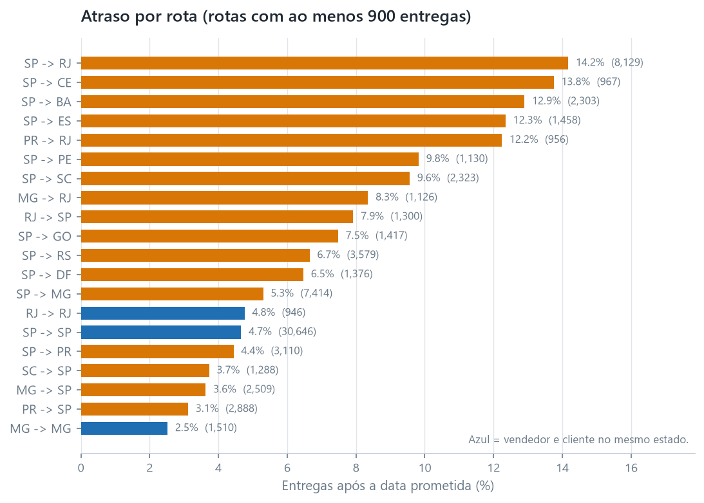

flowchart TB
O["orders<br/>99,441 linhas"]
subgraph fine["tabelas de granularidade mais fina"]
I["order_items<br/>112,650 linhas"]
P["order_payments<br/>103,886 linhas"]
R["order_reviews<br/>99,224 linhas"]
end
I --> AGG["agregar para uma linha por pedido<br/>soma, contagem, última avaliação"]
P --> AGG
R --> AGG
AGG --> FO["fct_orders<br/>99,441 linhas"]
O --> FO
FO --> Q["todos os totais deste relatório"]
01 · Análise de Varejo
O que este marketplace vende, quem compra e quanto custa uma entrega atrasada
Esta é uma análise do conjunto de dados de e-commerce brasileiro da Olist: 99,441 pedidos feitos entre setembro de 2016 e outubro de 2018 em um marketplace que conecta vendedores a compradores. Todo número abaixo foi calculado em SQL a partir dos modelos testados em projects/01-retail-analytics/dbt_project, e o modelo de onde cada tabela vem é nomeado logo abaixo dela.
A pergunta era quais alavancas realmente movem a satisfação do cliente e a recompra, e não o que aconteceu. Três conclusões saíram dela, e a que tratava da recompra foi incômoda.
Resumo executivo
Sem tempo? O memorando de decisão de uma página traz a recomendação e os números por trás dela. Este relatório é o raciocínio.
- R$ 16.0M passaram pelo marketplace em 25 meses, em 99,441 pedidos a uma média de R$ 160.99. O frete é 14.1% de tudo o que os clientes pagaram.
- Este é um negócio de aquisição, não de retenção. De 96,096 clientes, 96.9% compraram exatamente uma vez. A taxa de recompra é 3.1%, e a retenção no primeiro mês é 0.48%. O crescimento aqui não pode vir de um programa de fidelidade, porque quase não há com o que ser fiel.
- A entrega atrasada é rara e cara. 93.2% das entregas cumpriram a data prometida. Os 6.8% que não cumpriram têm nota média de avaliação de 2.27, contra 4.29 para pedidos no prazo. Além de uma semana de atraso, cerca de 80% dos clientes dão uma ou duas estrelas.
- O atraso é uma propriedade de um corredor, e não dos lugares ou dos vendedores. O Rio de Janeiro atrasa em 12.1% das entregas e o Ceará em 13.8%, contra 4.5% de São Paulo. Mas um vendedor do Rio entregando dentro do Rio iguala São Paulo (4.7% contra 4.6%), e 53 dos 65 vendedores que enviam para os dois estados vão pior para o Rio. O atraso é criado na travessia entre São Paulo e o Rio, que carrega dois terços dos pedidos do Rio a 14.2% de atraso.
- Esse corredor carrega a promessa mais frágil do conjunto de dados. De São Paulo ao Rio promete-se 27 dias, contra 30.3 do corredor mais distante, de São Paulo ao Rio Grande do Sul, e sua cauda é mais pesada. Três dias a mais na promessa registrariam 11.6% em vez de 14.2%, e sete a mais registrariam 8.4%. O pacote médio no corredor chega 10.9 dias antes, então a promessa não é o que torna as entregas atrasadas: é por que tanto do atraso é registrado.
1. De onde vem a receita
R$ 16,008,872.12 em 99,441 pedidos. O formato ao longo do tempo importa mais do que o total, porque dois dos vinte e cinco meses não são o que parecem.
| Mês | Pedidos | Clientes | Receita (R\() | Ticket médio (R\)) | |
|---|---|---|---|---|
| 2016-09 | 4 | 4 | 252.24 | 84.08 |
| 2016-10 | 324 | 321 | 59,090.48 | 182.38 |
| 2016-12 | 1 | 1 | 19.62 | 19.62 |
| 2017-01 | 800 | 765 | 138,488.04 | 173.11 |
| 2017-02 | 1,780 | 1,755 | 291,908.01 | 163.99 |
| 2017-03 | 2,682 | 2,642 | 449,863.60 | 167.73 |
| 2017-04 | 2,404 | 2,372 | 417,788.03 | 173.79 |
| 2017-05 | 3,700 | 3,625 | 592,918.82 | 160.25 |
| 2017-06 | 3,245 | 3,180 | 511,276.38 | 157.56 |
| 2017-07 | 4,026 | 3,947 | 592,382.92 | 147.14 |
| 2017-08 | 4,331 | 4,246 | 674,396.32 | 155.71 |
| 2017-09 | 4,285 | 4,212 | 727,762.45 | 169.84 |
| 2017-10 | 4,631 | 4,561 | 779,677.88 | 168.36 |
| 2017-11 | 7,544 | 7,430 | 1,194,882.80 | 158.39 |
| 2017-12 | 5,673 | 5,603 | 878,401.48 | 154.84 |
| 2018-01 | 7,269 | 7,166 | 1,115,004.18 | 153.39 |
| 2018-02 | 6,728 | 6,569 | 992,463.34 | 147.51 |
| 2018-03 | 7,211 | 7,115 | 1,159,652.12 | 160.82 |
| 2018-04 | 6,939 | 6,882 | 1,160,785.48 | 167.28 |
| 2018-05 | 6,873 | 6,814 | 1,153,982.15 | 167.90 |
| 2018-06 | 6,167 | 6,128 | 1,023,880.50 | 166.03 |
| 2018-07 | 6,292 | 6,230 | 1,066,540.75 | 169.51 |
| 2018-08 | 6,512 | 6,460 | 1,022,425.32 | 157.01 |
| 2018-09 | 16 | 14 | 4,439.54 | 277.47 |
| 2018-10 | 4 | 4 | 589.67 | 147.42 |

Dois meses são artefatos, e lê-los como tendência seria um erro.
As duas últimas linhas não são um colapso. O conjunto de dados termina em 17 de outubro de 2018, então setembro e outubro são meses parciais. Os 16 pedidos de setembro representam mais ou menos a primeira metade do mês, e os 4 pedidos de outubro representam dezessete dias de um mês que em grande parte não aconteceu. O crescimento mês a mês lido nessas linhas não tem sentido.
2016 é o problema oposto: é um lançamento, não um ano tranquilo. Dez pedidos em três meses e, depois, 324 só em outubro. O negócio efetivamente começa em 2017, e qualquer comparação ano a ano que comece em 2016 compara uma empresa com uma empresa que ainda não tinha aberto.
Novembro de 2017 é o maior mês do conjunto de dados, com 7,544 pedidos e R$ 1.19M, 63% acima de outubro. Isso é consistente com a Black Friday. E 2018 se acomoda em um platô em torno de 6,300–7,300 pedidos por mês, sem uma tendência forte de crescimento, o que é uma história diferente da que a linha do topo sugere.
O que vende
| Categoria | Pedidos | Itens | Receita (R\() | Valor médio do item (R\)) | |
|---|---|---|---|---|
| health_beauty | 8,836 | 9,670 | 1,258,681.34 | 130.16 |
| watches_gifts | 5,624 | 5,991 | 1,205,005.68 | 201.14 |
| bed_bath_table | 9,417 | 11,115 | 1,036,988.68 | 93.30 |
| sports_leisure | 7,720 | 8,641 | 988,048.97 | 114.34 |
| computers_accessories | 6,689 | 7,827 | 911,954.32 | 116.51 |
| furniture_decor | 6,449 | 8,334 | 729,762.49 | 87.56 |
| cool_stuff | 3,632 | 3,796 | 635,290.85 | 167.36 |
| housewares | 5,884 | 6,964 | 632,248.66 | 90.79 |
| auto | 3,897 | 4,235 | 592,720.11 | 139.96 |
| garden_tools | 3,518 | 4,347 | 485,256.46 | 111.63 |

São 74 categorias, e as dez principais respondem por 62.4% da receita de itens.
Uma observação sobre por que esses números não somam o total. A receita por categoria conta apenas o preço dos itens, e o frete é excluído de propósito: um mesmo envio costuma levar produtos de várias categorias, e o frete é cobrado uma única vez pelo pedido inteiro, então não há forma honesta de atribuí-lo. As categorias, portanto, somam R$ 13.59M contra R$ 16.0M de pagamentos, e a diferença é o frete, não um erro. Dos R$ 2.25M que o frete representa, R$ 162,591.95 pertencem a 775 pedidos que têm um pagamento, mas nenhuma linha de item alguma.
Três das 74 categorias não têm tradução para o inglês na fonte. Elas mantêm seus nomes em português em vez de serem agrupadas em um balde “unknown”, o que as esconderia.
O que o valor de receita inclui
Pagamentos não são o mesmo que vendas concluídas. Um pagamento é registrado para pedidos que depois foram cancelados ou marcados como indisponíveis, então esses pedidos estão dentro dos R$ 16.0M acima.

Juntos, eles somam R$ 269,735.11, cerca de 1.7% do total, e são contados de propósito: o pagamento foi recebido. Excluí-los seria uma definição diferente e igualmente defensável. Declarar qual delas está em uso aqui significa que um leitor que discorda pode discordar conscientemente, e não em silêncio.
2. Quem são os clientes
96,096 pessoas fizeram 99,441 pedidos.
| Pedidos realizados | Clientes | Participação |
|---|---|---|
| 1 | 93,099 | 96.88% |
| 2 | 2,745 | 2.86% |
| 3 | 203 | 0.21% |
| 4 | 30 | 0.03% |
| 5–9 | 18 | 0.02% |
| 17 | 1 | 0.001% |

| Segmento | Clientes | Participação | Gasto médio (R$) | Média de dias desde o último pedido |
|---|---|---|---|---|
| Others | 27,746 | 28.87% | 142.45 | 235 |
| At risk (was valuable) | 22,659 | 23.58% | 242.91 | 446 |
| Champions | 15,880 | 16.53% | 310.04 | 142 |
| Lost / low value | 15,427 | 16.05% | 55.16 | 448 |
| New / promising | 14,384 | 14.97% | 54.11 | 140 |
Não vou fingir que esta segmentação é mais útil do que é. O RFM funciona encontrando clientes que compram com frequência, e a frequência quase não varia aqui: 96.9% dos clientes fizeram exatamente um pedido, então quase todos empatam em F e a divisão por ntile separa essa massa empatada de forma arbitrária. O que resta é uma segmentação por recência e gasto, na qual “Champions” significa comprou recentemente e gastou bem, e não leal. Uma campanha de retenção voltada a esse grupo estaria voltada a compradores de primeira viagem.
Mantive-a mesmo assim, por dois motivos. É a primeira coisa que a maioria dos stakeholders pede, e seu fracasso aqui é a descoberta: não se chega a uma estratégia de retenção por segmentação em um negócio onde ninguém recompra. A coluna f_score está documentada em mart_rfm como quase sem significado exatamente por isso.
3. Eles voltam?
2,997 dos 96,096 clientes fizeram um segundo pedido alguma vez, uma taxa de recompra de 3.12%. Clientes recorrentes respondem por 6,342 dos 99,441 pedidos, ou 6.4%.
| Meses após o primeiro pedido | Tamanho da coorte | Ainda ativos | Retenção |
|---|---|---|---|
| 0 | 96,096 | 96,096 | 100.00% |
| 1 | 95,765 | 461 | 0.48% |
| 2 | 95,764 | 289 | 0.30% |
| 3 | 77,482 | 202 | 0.26% |
| 4 | 76,800 | 186 | 0.24% |
| 5 | 64,149 | 143 | 0.22% |
| 6 | 57,505 | 133 | 0.23% |
| 9 | 37,778 | 65 | 0.17% |
| 12 | 22,317 | 40 | 0.18% |
| 18 | 5,473 | 12 | 0.22% |

O mês zero é 100% por construção, porque é o mês em que o cliente foi adquirido. Um teste garante isso: um offset zero que não seja 100% significa que a lógica de coorte está quebrada, não que o negócio mudou.
A retenção não decai de uma base alta. Ela começa em 0.48% e fica estável em torno de 0.2%, que é a curva de um marketplace em que cada compra é quase independente da anterior.
Duas ressalvas. A janela de observação é de 25 meses, então um cliente que voltaria no terceiro ano é simplesmente invisível aqui. Isto é um piso, não a verdadeira taxa de recompra ao longo da vida. E customer_unique_id é um identificador derivado, então uma pessoa que altere seus dados pode aparecer duas vezes, o que infla ligeiramente a contagem em vez de reduzi-la.
O que isto significa estrategicamente. Se 96.9% da receita vem de primeiros pedidos, o crescimento tem de vir da aquisição de clientes. Um programa de fidelidade gastaria dinheiro para influenciar uma decisão que 96.9% dos clientes hoje não estão tomando. As duas alavancas que existem são adquirir mais clientes e elevar o valor dos pedidos, e elevar o valor dos pedidos sem recompra significa aumentar o tamanho da cesta por visita.
4. O desempenho das entregas explica a satisfação?
Esta é a relação mais forte do conjunto de dados.
6,535 de 96,476 entregas chegaram depois da data prometida, 6.77%.
| Resultado | Pedidos | Participação | Nota média | Avaliações ≤2 | Entrega média (dias) |
|---|---|---|---|---|---|
| No prazo | 89,941 | 90.45% | 4.290 | 9.27% | 11.00 |
| Atrasado: até 7 dias | 3,672 | 3.69% | 2.715 | 49.36% | 25.73 |
| Atrasado: 8 a 14 dias | 1,479 | 1.49% | 1.672 | 80.10% | 35.03 |
| Atrasado: mais de 14 dias | 1,384 | 1.39% | 1.723 | 78.35% | 54.62 |
| Nunca entregue | 2,965 | 2.98% | 1.747 | 78.05% | — |

Agregando, um pedido atrasado tem média de 2.27 contra 4.29 de um pedido no prazo. Essa diferença é a distância entre um cliente amplamente satisfeito e um que não está.
Um resultado dessa tabela me surpreendeu. Um pedido que nunca chegou tem nota 1.747, que é melhor do que a de um pedido que chegou de oito a quatorze dias atrasado (1.672). A pior experiência da tabela não é o pacote que sumiu.
A explicação provável é que se trata de situações diferentes, e não de gravidades diferentes. Um pedido cancelado ou indisponível é um evento encerrado, geralmente reembolsado e, muitas vezes, comunicado. Um pedido que só aparece 35 dias atrasado não está encerrado: o cliente esperou e ainda teve de lidar com o produto. Eu gostaria de testar isso antes de agir com base nisso, e não testei, então o relato como observação, e não como conclusão.
Onde está o atraso
| Estado | Entregas | Atrasos | Taxa de atraso | Entrega média (dias) | Nota média |
|---|---|---|---|---|---|
| SP | 40,495 | 1,820 | 4.49% | 8.76 | 4.173 |
| RJ | 12,353 | 1,495 | 12.10% | 15.31 | 3.878 |
| MG | 11,355 | 520 | 4.58% | 12.01 | 4.135 |
| RS | 5,344 | 325 | 6.08% | 15.30 | 4.132 |
| PR | 4,923 | 199 | 4.04% | 11.99 | 4.182 |
| SC | 3,547 | 291 | 8.20% | 14.96 | 4.074 |
| BA | 3,256 | 396 | 12.16% | 19.34 | 3.861 |
| CE | 1,279 | 176 | 13.76% | 21.27 | 3.857 |

O atraso não é aleatório pelo país. São Paulo, que representa 42% de todas as entregas, atrasa 4.49% das vezes e entrega em 8.76 dias. O Ceará atrasa 13.76% das vezes e leva 21.27 dias. Entre os estados, prazos de entrega mais longos e atrasos mais altos andam juntos.
O Rio de Janeiro é o caso acionável. É o segundo maior mercado, com 12,353 entregas, e atrasa 2.7× mais do que São Paulo. Se o Rio tivesse o desempenho de São Paulo, cerca de 940 de seus 1,495 pedidos atrasados não estariam atrasados. Aplicando o comportamento de avaliação dos pedidos atrasados (49.36% com nota ≤2) em contraste com os pedidos no prazo (9.27%), isso equivale a cerca de 370 avaliações de uma e duas estrelas a menos por ano só do Rio.
Essa estimativa é uma associação, não uma previsão causal. Não demonstrei que fazer a entrega no prazo causa a avaliação melhor, apenas que as duas andam juntas, e os clientes que passam por entrega atrasada podem diferir em outros aspectos. Então a próxima pergunta não é quanto valem os 940 pedidos, e sim onde o atraso é criado, e isso é respondível com os dados já carregados.
Onde o atraso acontece
A explicação óbvia é que alguns vendedores são ruins e outros são bons, e os dados não a sustentam. Dividindo as entregas do Rio entre o tempo antes de o pacote chegar à transportadora e o tempo depois:
| entregas | dias até a transportadora | dias em trânsito | dias no total | atraso | |
|---|---|---|---|---|---|
| Rio de Janeiro | 12,353 | 3.31 | 12.00 | 15.31 | 12.10% |
| São Paulo | 40,495 | 3.16 | 5.60 | 8.76 | 4.49% |
Os vendedores dos dois estados despacham na mesma velocidade, com diferença de um quinto de dia, e toda a diferença está no trânsito.
Isso se sustenta quando o mesmo vendedor envia para os dois estados. Dos 65 vendedores com pelo menos 30 entregas para o Rio e pelo menos 30 para São Paulo, 53 vão pior para o Rio, e a taxa média de atraso é de 12.45% lá contra 4.80% para São Paulo. Um vendedor ruim seria ruim nas duas direções.
O teste inverso resolve o destino. Um vendedor do Rio entregando no Rio atrasa 4.67% das vezes, que é o que um vendedor de São Paulo alcança dentro de São Paulo (4.63%). O Rio não é um lugar difícil para entregar. Um vendedor de São Paulo enviando o mesmo tipo de pacote para o Rio atrasa 14.07% das vezes.

Dois terços das entregas do Rio, 8,129 de 12,353, saem de vendedores de São Paulo, e esse corredor é o pior da tabela, com 14.17%. Todo corredor que fica dentro de um único estado fica em 4.8% ou menos. A dificuldade é criada na travessia.
A promessa nesse corredor é a mais frágil
São Paulo ao Rio não é a rota mais longa do conjunto de dados. É a rota com a menor margem para erro. A entrega mediana leva 12.8 dias, quase o mesmo que São Paulo ao Rio Grande do Sul, com 13.9 dias, mas seu nonagésimo percentil é de 31.0 dias contra 27.1, e sua promessa é de 27.0 dias contra 30.3. Uma cauda mais pesada e um prazo mais curto no mesmo corredor.
Dar três dias a mais a esse corredor o levaria de 14.17% de atraso para 11.60%; sete dias a mais o levariam para 8.37%. São Paulo ao Rio Grande do Sul, que é mais distante, registra 6.65%.
O pacote médio de São Paulo ao Rio chega 10.9 dias antes e 14% ainda chegam atrasados. A maioria das entregas no corredor tem dias de sobra e uma minoria não tem nenhum, e 379 pedidos chegam mais de duas semanas depois da promessa.
Uma ressalva decide até onde isso alcança. A promessa é definida pela Olist, então ampliá-la muda a medição, não a entrega. Se ela também muda o que o cliente pensa, não se pode resolver com estes dados, porque a promessa e o tempo real de entrega estão correlacionados por construção.
O que eu faria em seguida
- Conserte o corredor de São Paulo ao Rio, e não os vendedores nele. Os vendedores despacham em cerca de três dias em todos os corredores, os próprios vendedores do Rio entregam no prazo dentro do Rio, e 53 dos 65 vendedores que enviam para os dois estados vão pior para o Rio. O atraso é criado na travessia: 8,129 entregas, 14.17% atrasadas, e 379 delas mais de duas semanas atrasadas. A pergunta operacional é o que acontece durante os 9 dias de trânsito mediano e nos 31 dias do nonagésimo percentil.
- Depois, recalibre a promessa, corredor por corredor. A promessa é uniforme onde o serviço não é. São Paulo ao Rio recebe 27 dias contra 30.3 do corredor mais distante, São Paulo ao Rio Grande do Sul, e três dias a mais registrariam 11.60% em vez de 14.17%. Como o pacote médio chega 11.18 dias antes e 93.2% chegam no prazo, uma promessa mais ampla custa pouco operacionalmente. O que ela muda para o cliente não pode ser medido aqui, porque a promessa e o tempo de entrega andam juntos, então eu a executaria como um experimento deliberado em vez de inferi-la.
- Teste o resultado do pacote que sumiu. Um pedido que nunca chegou recebeu nota melhor do que um que chegou duas semanas atrasado. Isso é ou uma diferença real na forma como as duas falhas são tratadas, ou um artefato de quem decide avaliar, e é testável com os dados já carregados. Até ser testado, eu o relato como observação, não como conclusão.
- Alimente o Projeto 02. Os grupos de entrega são o alvo natural do modelo de previsão de entregas atrasadas, e a restrição já está clara: só podem ser usadas variáveis conhecidas no momento da compra.
Limitações
Elas são declaradas antes de os números serem usados, e não depois, porque moldam como os números devem ser lidos:
- O conjunto de dados é um recorte de setembro de 2016 a outubro de 2018, não um fluxo ao vivo. Setembro e outubro de 2018 são parciais. Qualquer coisa descrita aqui é uma observação de um período, não uma tendência.
- As avaliações são autosselecionadas. Só aparecem os clientes que optaram por deixar uma avaliação, 98,673 de 99,441 pedidos. A satisfação deles não é a da população, e uma média de 4.29 entre os respondentes não é uma média de 4.29 entre os clientes.
- “Receita” significa valor bruto de mercadorias conforme registrado na tabela de pagamentos. Não há dados de custo, margem, reembolso ou devolução neste conjunto de dados, então nenhuma afirmação sobre lucro é possível, apenas sobre dinheiro recebido.
- A receita inclui pedidos posteriormente cancelados ou marcados como indisponíveis (1,234 pedidos, R$ 269,735.11 — as duas barras âmbar em Figura 3), porque um pagamento foi registrado para eles. Excluí-los seria uma definição diferente e igualmente defensável; esta é declarada para que o leitor possa discordar dela conscientemente.
customer_unique_idé derivado e imperfeito. As conclusões sobre recompra são um piso, não um teto.- Contagens de pedidos e contagens de itens são granularidades diferentes. Tudo sobre produtos ou categorias vem de
fct_order_items; tudo sobre dinheiro, entrega ou avaliação vem defct_orders. Misturá-los é a forma mais provável de produzir um total errado. - Um corredor é um par de estados, não uma rota medida. Os estados do vendedor e do cliente são a geografia mais fina que o conjunto de dados carrega, então “São Paulo ao Rio” significa um vendedor em um estado e um cliente no outro, e não uma distância ou uma estrada específica.
- O conjunto de dados não tem identificador de transportadora. A descoberta do corredor diz onde o atraso é criado. Ela não pode dizer quem o cria, então restringi-la a uma transportadora ou a um armazém exige o lado operacional, e não outra consulta.
- Os números de corredor cobrem 96,411 das 96,476 entregas. Um pedido cujos itens vieram de vendedores em mais de um estado, 65 pedidos, não tem um único corredor e fica fora da tabela de corredores. Nenhum outro número de entrega é afetado.
- Onde faltam carimbos de data e hora de entrega (2,965 pedidos), esses pedidos são excluídos das estatísticas de entrega em vez de imputados, e mantidos como um grupo próprio onde o assunto é a experiência do cliente.
Como reproduzir isto
Toda tabela acima vem de um modelo em projects/01-retail-analytics/dbt_project:
| Tabela | Modelo |
|---|---|
| Receita por mês | mart_revenue_monthly |
| Receita por categoria | mart_category_revenue |
| Segmentos de clientes | mart_rfm |
| Retenção por coorte | mart_cohort_retention |
| Resultados de entrega | mart_delivery_performance |
| Atrasos por estado | mart_late_delivery_by_state |
Como a tabela de pedidos é construída
A decisão de engenharia mais importante desta análise é que a tabela no nível do pedido é montada agregando três tabelas de granularidade mais fina antes de juntá-las, em vez de juntá-las diretamente.
Agregue primeiro, depois junte. Uma junção direta multiplica linhas, e nada dá erro.
Uma junção direta multiplicaria linhas: um pedido com quatro itens e três pagamentos contribuiria com doze linhas para cada contagem e com doze vezes seu valor para cada soma. Todo número deste relatório estaria errado, o SQL compilaria e o build passaria. Há um registro escrito dessa decisão, e da peculiaridade de avaliação que ela revelou, em docs/decisions/.
Do espelho até a página
flowchart TB
M["espelho do Hugging Face<br/>revisão fixada"] --> D["download_data.py"]
D --> CSV["9 arquivos CSV<br/>~126 MB, nunca versionados"]
CSV --> L["load_raw.py<br/>toda coluna TEXT"]
L --> DB[("PostgreSQL<br/>schema: raw")]
DB --> S["dbt staging<br/>views — cast e renomeação"]
S --> F["dbt marts<br/>tabelas — 80 testes de dados"]
F --> C["make_charts.py"]
C --> FIG["figuras PNG"]
F --> REP["relatório Quarto"]
FIG --> REP
Apenas os três passos até dbt marts precisam de um banco de dados. O relatório e as figuras são versionados, então o site é construído sem um.
uv run python tasks.py setup # start the database and fetch the data
uv run python tasks.py pipeline # load, build, charts, test, renderdbt build também executa 80 testes de dados, incluindo um que garante que a retenção do mês zero é exatamente 100%, um que garante que o sinalizador de atraso e o número de dias de atraso não podem discordar, e um que garante que uma promessa mais longa nunca pode deixar mais pedidos atrasados. Os dois primeiros existem porque já estiveram errados uma vez.